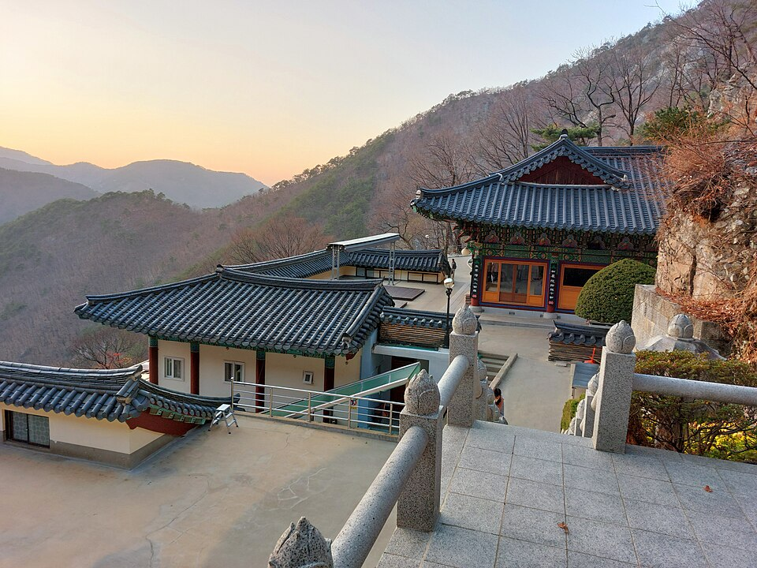

청도 검정고시 — 오십에 다시 시작해도 늦지 않은 이유

마흔이 넘어, 쉰이 넘어 상담을 주시는 분들이 가장 먼저 꺼내시는 말이 “이 나이에 되겠습니까”입니다. 그런데 막상 시작하고 나면 나이 때문에 막히는 일은 거의 없습니다. 걸리는 건 나이가 아니라, 공부를 손에서 놓은 지 오래됐다는 것과 물어볼 데가 마땅치 않다는 것입니다. 이 두 가지는 방법이 있습니다. 청도 검정고시를 늦게 시작하시는 분들께 드리는 이야기입니다.
“어디서부터”가 막막한 게 정상입니다
20년, 30년 만에 책을 펴면 목차부터 낯섭니다. 이때 많은 분이 1과부터 순서대로 보려다 며칠 만에 지치십니다. 앞부분에서 막히면 뒤는 아예 못 보고 끝나기 때문입니다.
순서대로 보는 대신 기출 한 회차를 먼저 풀어 보시길 권합니다. 점수를 보려는 게 아니라 지금 어디까지 남아 있는지 확인하려는 것입니다. 의외로 기억나는 부분이 있고, 아예 처음 보는 부분도 있습니다. 그 둘을 갈라 놓으면 “어디서부터”가 저절로 정해집니다.
기출을 푸실 때 모르면 찍지 말고 빈칸으로 두세요. 찍어서 맞은 문제가 섞이면 무엇을 모르는지가 흐려집니다.
한 번에 다 붙이려 하지 않아도 됩니다
검정고시는 과목마다 60점을 넘기면 그 과목은 합격으로 남습니다. 전 과목을 한 번에 다 맞춰야 하는 시험이 아닙니다.
오래 쉬셨다면 이 제도를 적극적으로 쓰시는 편이 낫습니다. 이번에는 지금 상태에서 60점에 가장 가까운 과목을 확실히 붙여 두고, 남은 과목은 다음 회차로 넘기는 방식입니다. 한 과목이라도 붙고 나면 “되긴 되는구나”라는 감각이 생기는데, 이게 끝까지 가는 데 생각보다 큰 힘이 됩니다.
반대로 전부 한꺼번에 준비하다 전 과목이 어중간해지면, 결과가 나온 뒤 다시 시작할 기운이 잘 나지 않습니다.
외우는 게 예전 같지 않을 때
“머리가 굳었다”고 하시는데, 실제로는 외우는 방식이 학생 때와 달라져야 하는 것에 가깝습니다. 한 번에 통째로 외우는 건 확실히 힘들어집니다. 대신 같은 것을 짧게 여러 번 보는 방식은 나이와 큰 상관이 없습니다.
그래서 오늘 본 것을 다음 날 아침에 5분만 다시 보고, 사흘 뒤에 또 5분 보는 식으로 간격을 두고 반복하시는 걸 권합니다. 한 자리에서 한 시간 붙잡고 외우는 것보다 훨씬 오래 남습니다.
또 하나, 손으로 적으면서 보시는 분들이 결과가 좋은 편입니다. 눈으로만 읽으면 아는 것 같다가 시험지 앞에서 안 나옵니다.
가족에게 꼭 미리 알려야 할까
알리고 시작하는 분도, 조용히 준비해서 합격증을 보여 주는 분도 계십니다. 정답은 없습니다. 다만 집에서 공부할 자리와 시간을 확보해야 한다면 한 사람 정도는 알고 있는 편이 편합니다. “저녁 8시부터 한 시간은 나를 찾지 말아 달라”는 말 한마디가 실제로 큰 차이를 만듭니다.
알리기가 부담스러우시면 수업만 조용히 진행하셔도 됩니다. 저희 쪽에서 먼저 가족에게 연락드리는 일은 없습니다.
청도에서 이렇게 함께합니다
저희는 1:1 맞춤 과외라 진도를 사람에 맞춰 잡습니다. 정해진 커리큘럼을 따라가게 하지 않고, 기억이 남아 있는 부분은 빠르게 넘기고 처음 보는 부분에 시간을 쓰는 식으로 진행합니다. 모르는 걸 몇 번이고 다시 물어보셔도 됩니다 — 그러라고 1:1로 하는 것입니다. 이번 회차에 어떤 과목을 붙일지, 남은 과목은 어떻게 나눌지도 같이 정해 드립니다. 청도군과 인근 지역은 방문 수업이 가능하고, 이동이 부담되면 화상(줌) 수업으로 집에서 그대로 진행합니다.